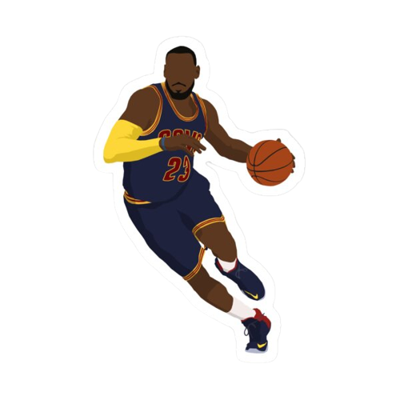
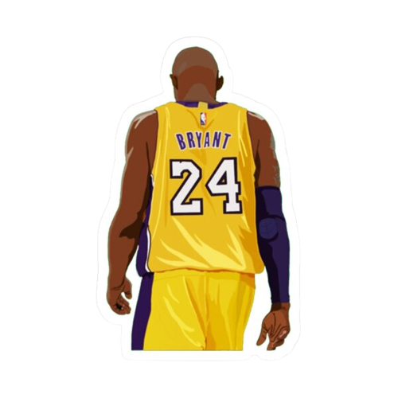

Top 5 Scorers in NBA History
How I define"Scorer"
- Ability to score with a variety of moves and on all 3 levels
- Can score at will due to a specific move or their physicality
- Scoring related stats

5. LeBron James
Career Stats (incl. playoffs) 27.9ppg - 50 FG% | 34 3P% | 73.7 FT%
- Arguably best driver OAT, can get to paint at will
- Respectable from mid-range and 3, contrary to popular belief
- All-time leading scorer | Never avg'd less than 20ppg in a season | 19/20
seasons avg'd 25+ ppg
4. Stephen Curry
Career Stats (incl. playoffs) 25.5ppg - 46.3 FG% | 41.4 3P% | 90 FT%
- Universally regarded "best shooter OAT"
- High efficiency 3 level scorer
- 11/14 seasons averaged more than 22ppg | 210+ 3s 9/14 seasons

3. Kobe Bryant
Career Stats (incl. playoffs) 25.3ppg - 44.7 FG% | 33 3P% | 82.6 FT%
- Supreme footwork and pull-up mid-range led to alot of FGs made, 4th all-time scoring list
- Can score with difficulty on all 3 levels, arugably best "tough shot maker" OAT
- Top 5 in most 20+, 25+, 30+, 35+, 40+, 45+, 50+, 55+, 60+, 65+, 70+, 75+, 80+ pt games